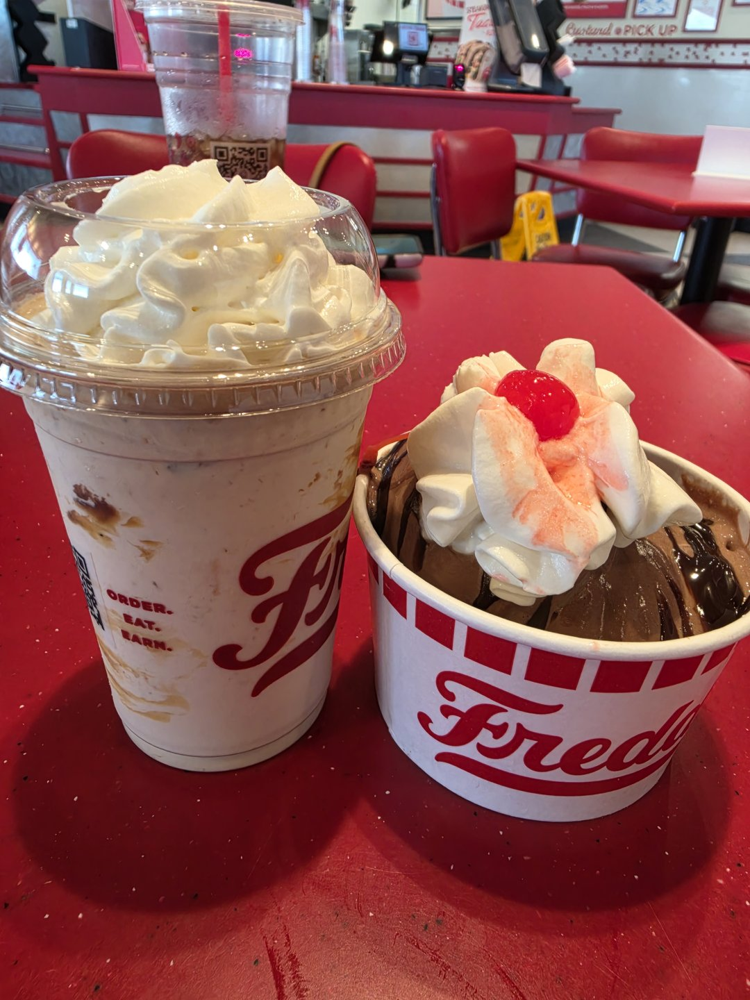
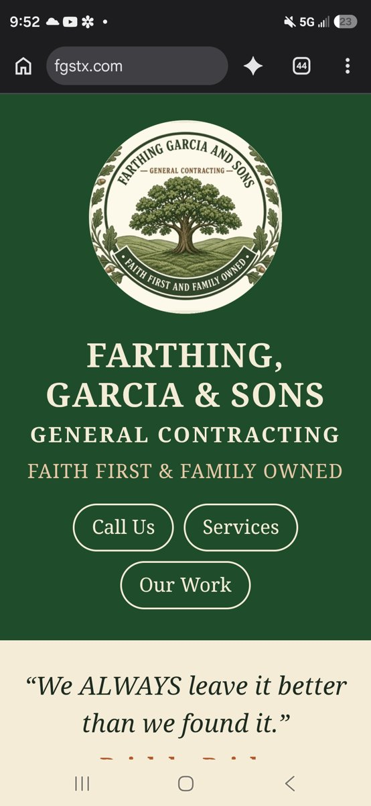
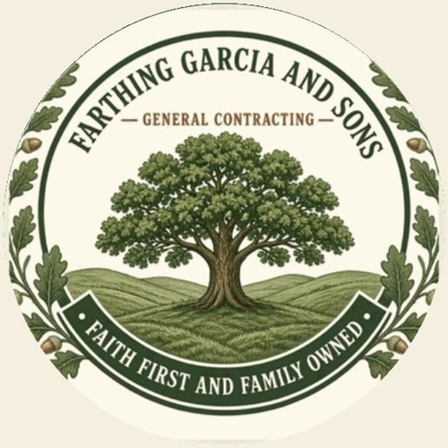
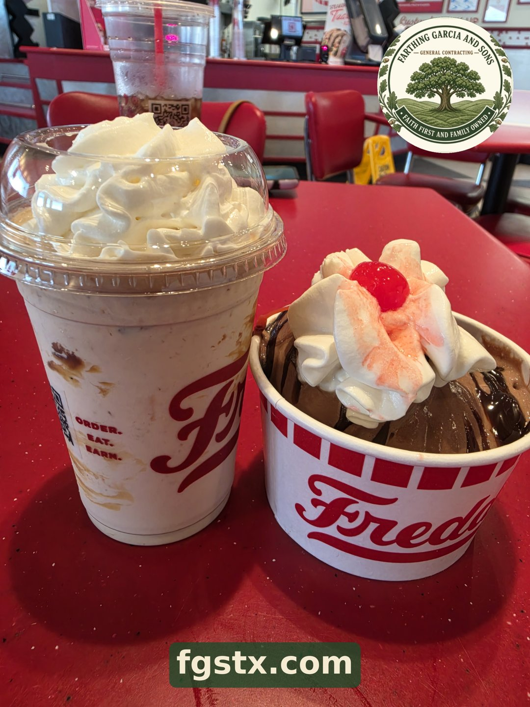
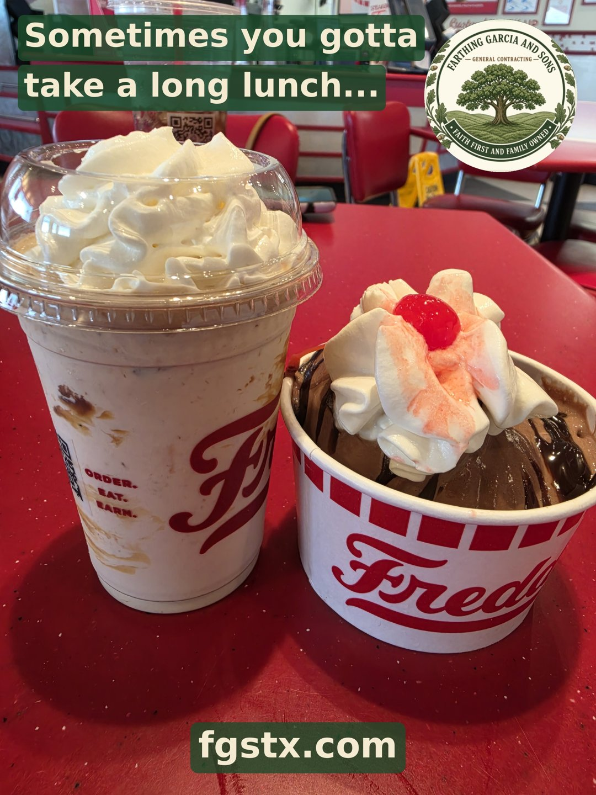

Step 1: The real photo

Blake took this photo at lunch after signing a $5,000 contract. Nothing in it was changed or made up.
Step 2: Find our real logo

We took our oak tree logo straight from our own website, fgstx.com.
Step 3: Cut out the logo

A small computer program cut the round logo out so it could sit on the photo.
Step 4: Add the logo and our web address

The logo went in the top corner and fgstx.com went at the bottom, so people know where to find us.
Step 5: Add the words

Blake asked for the words: Sometimes you gotta take a long lunch... That is the finished picture.
Who helped
Blake took the photo and made every choice. His helper assistants did the editing on a computer, and nothing was posted until Blake said go.
A note about the Freddy's cups
This was our own lunch that we bought. Freddy's does not sponsor us, and we are not partners. We just like their custard.
Where it was posted
Facebook: Farthing, Garcia & Sons, Blake Dylan, and Dynamis Blake Designs. Instagram: Blake Dylan Farthing.